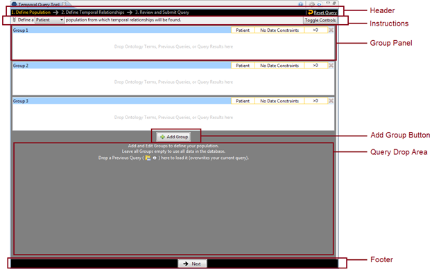
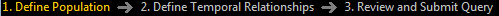
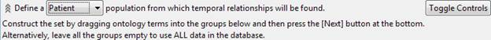
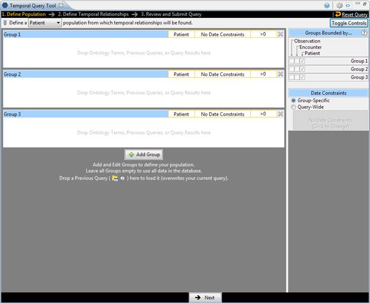
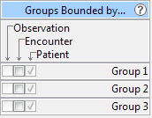
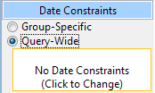
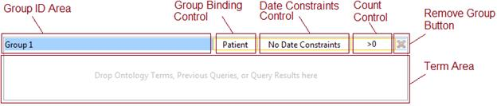

The image below shows the starting point of the Temporal Query Tool view along with its annotations. Users would interact with the Group Panels to define a population they are interested in.

Header

The Header consists of two parts. On the left side are the three steps to be taken during the query submission process. The steps will appear in different colors, which indicate one of the following:
|
Color |
Indication |
|
Orange |
Indicates the step the user is currently on. |
|
Gray |
Indicates the user has not visited the step. |
|
White |
Indicates the user has visited the step but they are not currently on it. |
When the Temporal Query Tool opens the users are automatically on Step 1: Define Population.
On the right side are the Reset Query icon and link. Whenever the user wants to restart a query, clicking on the icon or the link will remove all contents that have been entered into the view and allow the user to start over.
|
|
WARNING: |
|
|
|
Once you click on the Reset Query, all data previously defined in the view will be cleared. Therefore you need to make sure you want to remove all the data before resetting the entire query. |
|
The Header, along with the Footer, is always available to users regardless which step the users are currently on.
Instructions

The Instructions area provides simple instructions to the user on what needs to be done. It consists of three parts:
1. The background
2. The Patient / Encounter Dropdown box
3. The Toggle Controls button.
Users can click on the background to expand the instructions to show the full instruction. Click it again to contract it to its original state.

The Patient / Encounter Drop-down list allows users to choose whether to define the population of the query using patients or encounters. The default is “Patient”.

|
|
NOTE: |
|
|
|
Defining a population is optional. Skip step 1 if you want to use all the data available in your i2b2 database. |
|
Finally, clicking on the Toggle Controls button will show or hide the Supplemental Control Panel.

There are two main supplemental control components which are further defined in the next two sections.
Supplemental Control – Group Binding Control Panel

The Group Binding Control Panel allows users an overview of the Group Binding for all Group Panels in the current query.
1. Each group panel can be in one of the following binding choices which are synonymous to the timing choices in the classic Query Tool:
|
Temporal Query Tool Binding Choices |
Classic Query Tool Timing Choices |
|
Bound-by-Patient |
Treat all groups independently |
|
Bound-by-Encounter |
Selected groups occur in the same financial encounter |
|
Bound-by-Observation |
Item instance will be the same |
2. The three binding choices are hierarchical. Every group is Bound-by-Patient by default. Choosing Bound-by-Encounter for a group, that is also Bound-by-Patient. Similarly, choosing Bound-by-Observation, the group is also Bound-by-Encounter and Bound-by-Patient. The checkboxes reflect which level of binding the group currently is, and what changes users can make.
3. Only when a modifier term is in a group can that group be selected to be in Bound-by-Observation mode (and so the Observation checkbox will only be then clickable).
4. Hovering over the question mark icon will display a short explanation of the binding options.
5. The Group Binding model is the same as the timing model from the classic query tool. However the group binding is more simplified in that Query-Level timing is automatically determined by the Group Panel-Level timing.
6. The number of rows in the Group Binding Control Panel increases or decreases as Groups are added or removed.
Supplemental Control – Centralized Date Constraints
|
|
 |

There are two options:
|
Option |
Description |
|
Group-Specific |
Let groups manage their own date constraints |
|
Query-Wide |
Use query-wide date constraints. Click to change the constraints |
This control panel sets the date constraints for all groups in the query. When a date constraint is set in this widget, each Group’s individual date constraint widget will be disabled. Select Query-Wide to set the date constraint for all groups. Select Group-Specific to allow each group to manage its own date constraints.
Group Panel

At the start up, the view for step 1 displays three groups by default. Each of the groups contains several components. In general, all areas bounded by an orange-yellow highlight are clickable.
Group ID Area
This area is the name tag for a group. The ID of the group is displayed here. It also serves as the drag / drop handle for the group. Users can drag a group (only groups that have content can be dragged) and drop them into the Workplace View. Users can also drag one group by its Group ID area and drop it on the other group’s Group ID area to overwrite the target group. A group from the Workplace view can also be dropped on the Group ID area.
Group Binding Control
This area allows users to set Group Binding for this group. The effect is exactly the same as setting it from the Group Binding Control Panel in the supplemental controls panel. User must click on this area to launch a popup window to set the group binding constraints for this group. For a Patient Population, the default binding is Patient. For an Encounter Population, the default is Encounter. Populations selection is made from the Patient / Encounter Drop-down list in the Instructions section.
Date Constraints Control
Users must click on this area to set the date constraints for this group. Date constraints are represented by a range. It has a start date and an end date. One or both of the start date and end date may be unspecified (none). By default, neither is specified, and the date constraints are from beginning of time to the most current recent time in the database. When date constraints are set, terms that occur outside of the specified range are not considered matches.
Occurrence Count Control
Tis control allows users to specify how many occurrences of a term must occur before it is considered a match. The default is at least 1 (represented by “>0”). Users can specify an at-least constraint (>) or an at-most constraint (<). A no occurrence options is allows as (=0). Note that this Count Control replaces both the occurrence control and the exclude button from the classic query tool.
Remove Group Button
Clicking on this button will remove the group from the query construction. Users should use it to quickly discard a group.
Term Area
This area accepts terms from the Ontology cell (Navigate Terms and Find Terms views). Users can drag a term from these views in addition to saved terms in Workplace view ad drop them here. In addition, Previous Queries, query results such as Patients, Patient Sets, or Encounter Sets can also be dropped here, depending on users’ needs.
Add Group Button
The Add Group button lets users add additional groups to their query.
Query Drop Area
A previous query saved in Workplace or Previous Queries views can be dragged and dropped her to reload the query. Reloading a query will overwrite the current query information. If the previous query is a temporal query, its population and temporal relationships will be loaded. If the previous query is a non-temporal query, only the population portion of the temporal query view will be loaded since a non-temporal query has no temporal relationship information.
Footer

The footer allows users to navigate through the three steps of the temporal querying process. Users must complete a step before they can move to the next step. In the first step, users can only move forward if the current step is completed. The first step is optional, so the “Next” button is always available. However, the transition from Step 2 to Step 3, a “Previous” button is also available for users to go back a step.
When users click on “Next” in Step 1, Step 2 will transition in from the right in a sliding animation. Before the animated transition, existing Groups will be compacted so that only Groups with content will remain. All empty Groups will be removed.